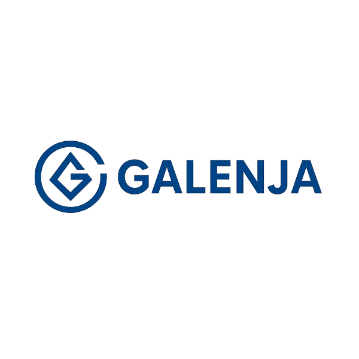

Support individuel
Dépannage, installation, sécurité, optimisation et accompagnement numérique au quotidien.
Découvrir
Gagnez du temps, réduisez les erreurs et améliorez les opérations de votre PME.
Dépannage, installation, sécurité, optimisation et accompagnement numérique au quotidien.
DécouvrirSupport Microsoft 365, automatisation, sécurité, télétravail, reporting et maintenance.
DécouvrirAudit, migration, cybersécurité, automatisation et missions spécifiques sur projet.
DécouvrirWorkflows métiers, emails HTML, génération PDF/Word, validations, Teams/Outlook/SharePoint.
Scripts sur mesure, inventaire, maintenance, export et reporting automatisé.
Requêtes, dashboards, extraction et reporting automatique.
Tableaux HTML/Excel, livrables clairs et documentés.
Assistance informatique locale ou à distance pour PC/Mac, réseaux, logiciels, cybersécurité et sauvegardes.
Support métier, Microsoft 365, sécurité, automatisation et assistance locale ou à distance.
Expertise ponctuelle, audit, cybersécurité, migration et services sur projet.
🚀 PME, TPE, indépendants : libérez‑vous enfin des galères informatiques ! Galenja vous accompagne avec plus de 20 ans d’expérience IT et un sens aigu de l’efficacité.
🎁 Diagnostic offert. Contact : gaetan@galenja.fr • 06 60 57 88 42
⚙️ Automatisations pour gagner du temps et faciliter le travail à distance — Power Automate, PowerShell, Azure DevOps.